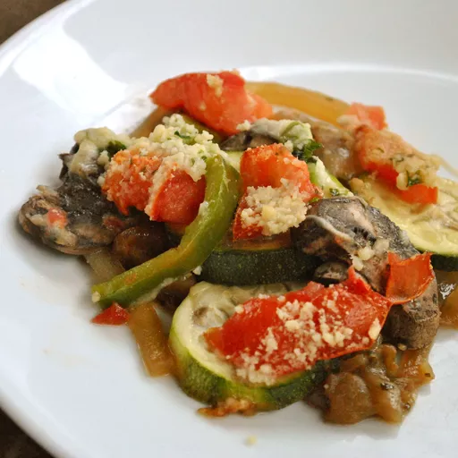

Ratatouille
★ ★ ★ ★ ☆ 4.6 (584) ┃ 89 reviews ┃ 10 photos

Description
This ratatouille recipe is a version of the terrific French vegetable stew made with fresh tomatoes and lots of summer vegetables. It's very versatile side dish and makes a delicious vegetarian main dish, too.
Ingredients
- 2 tablespoons olive oil, divided
- 3 cloves garlic, minced
- 1 eggplant, cut into ½-inch cubes
- 2 teaspoons dried parsley
- salt to taste
- 1 cup grated Parmesan cheese
- 2 zucchini, sliced
- 2 large tomatoes, chopped
- 2 cups sliced fresh mushrooms
- 1 large onion, sliced into rings
- 1 green or red bell pepper, sliced
Steps
- Preheat the oven to 350 degrees F (175 degrees C). Coat the bottom and sides of a 1 ½-quart casserole dish with 1 tablespoon olive oil.
- Heat remaining 1 tablespoon olive oil in a medium skillet over medium heat. Cook and stir garlic until fragrant and golden brown. Add eggplant and
parsley; cook and stir until eggplant is tender and soft, about 10 minutes. Season with salt to taste.
- Spread eggplant mixture evenly across the bottom of the prepared casserole dish; sprinkle with a few tablespoons of Parmesan cheese. Spread
zucchini in an even layer over top. Lightly salt and sprinkle with a little more cheese. Continue layering in this fashion, with tomatoes, mushrooms, onion, and bell pepper, covering each layer with a sprinkling of salt and cheese.
- Bake in preheated oven until vegetables are tender, about 45 minutes.